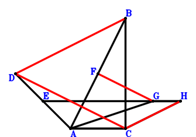
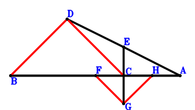
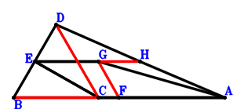

Exercise 1： Let GACH be a trapezoid with AC//GH and AC=2GH. F, E are the midpoints of AB, DA, respectively. BC⊥EG. Given that DC//FG and DB//CH, prove that \(DC·FG=CH·DB\).

\(\because \) E is the midpoint of DA \(\therefore \small\overrightarrow{CE}=\dfrac{\small\overrightarrow{CA}}{2} + \dfrac{\small\overrightarrow{CD}}{2}\).\(\because \) F is the midpoint of AB \(\therefore \small\overrightarrow{CF}=\dfrac{\small\overrightarrow{CA}}{2} + \dfrac{\small\overrightarrow{CB}}{2}\).\(\because \) AC//GH and AC=2GH \(\therefore \small\overrightarrow{CH}=- \dfrac{\small\overrightarrow{CA}}{2} + \small\overrightarrow{CG}\).\(\because \) BC⊥EG \( \therefore\small\overrightarrow{CB} \cdot \small\overrightarrow{EG}=\small\overrightarrow{CB} \cdot \left(- \small\overrightarrow{CE} + \small\overrightarrow{CG}\right)=\small\overrightarrow{CB} \cdot \left(- \dfrac{\small\overrightarrow{CA}}{2} - \dfrac{\small\overrightarrow{CD}}{2} + \small\overrightarrow{CG}\right)=- \dfrac{\small\overrightarrow{CA} \cdot \small\overrightarrow{CB}}{2} - \dfrac{\small\overrightarrow{CB} \cdot \small\overrightarrow{CD}}{2} + \small\overrightarrow{CB} \cdot \small\overrightarrow{CG}=0.\)In conclusion, \(- \small\overrightarrow{CD} \cdot \small\overrightarrow{FG} + \small\overrightarrow{DB} \cdot \small\overrightarrow{HC}=- \small\overrightarrow{CD} \cdot \left(- \small\overrightarrow{CF} + \small\overrightarrow{CG}\right) - \small\overrightarrow{CH} \cdot \left(\small\overrightarrow{CB} - \small\overrightarrow{CD}\right)=- \small\overrightarrow{CD} \cdot \left(- \dfrac{\small\overrightarrow{CA}}{2} - \dfrac{\small\overrightarrow{CB}}{2} + \small\overrightarrow{CG}\right) - \left(- \dfrac{\small\overrightarrow{CA}}{2} + \small\overrightarrow{CG}\right) \cdot \left(\small\overrightarrow{CB} - \small\overrightarrow{CD}\right)=\dfrac{\small\overrightarrow{CA} \cdot \small\overrightarrow{CB}}{2} + \dfrac{\small\overrightarrow{CB} \cdot \small\overrightarrow{CD}}{2} - \small\overrightarrow{CB} \cdot \small\overrightarrow{CG}=0\)\(\because\) DC//FG and DB//CH \(\therefore\) \(DC·FG=CH·DB\).
Exercise 3： Let F, E, H be the midpoints of BA, DA, CA, respectively. BC⊥EG. Given that DC//FG and GH//BD, prove that \(DC·FG=BD·GH\).

\(\because \) E is the midpoint of DA \(\therefore \small\overrightarrow{CE}=\dfrac{\small\overrightarrow{CA}}{2} + \dfrac{\small\overrightarrow{CD}}{2}\).\(\because \) F is the midpoint of BA \(\therefore \small\overrightarrow{CF}=\dfrac{\small\overrightarrow{CA}}{2} + \dfrac{\small\overrightarrow{CB}}{2}\).\(\because \) H is the midpoint of CA \(\therefore \small\overrightarrow{CH}=\dfrac{\small\overrightarrow{CA}}{2}\).\(\because \) BC⊥EG \( \therefore\small\overrightarrow{CB} \cdot \small\overrightarrow{EG}=\small\overrightarrow{CB} \cdot \left(- \small\overrightarrow{CE} + \small\overrightarrow{CG}\right)=\small\overrightarrow{CB} \cdot \left(- \dfrac{\small\overrightarrow{CA}}{2} - \dfrac{\small\overrightarrow{CD}}{2} + \small\overrightarrow{CG}\right)=- \dfrac{\small\overrightarrow{CA} \cdot \small\overrightarrow{CB}}{2} - \dfrac{\small\overrightarrow{CB} \cdot \small\overrightarrow{CD}}{2} + \small\overrightarrow{CB} \cdot \small\overrightarrow{CG}=0.\)In conclusion, \(- \small\overrightarrow{CD} \cdot \small\overrightarrow{FG} + \small\overrightarrow{DB} \cdot \small\overrightarrow{GH}=- \small\overrightarrow{CD} \cdot \left(- \small\overrightarrow{CF} + \small\overrightarrow{CG}\right) + \left(\small\overrightarrow{CB} - \small\overrightarrow{CD}\right) \cdot \left(- \small\overrightarrow{CG} + \small\overrightarrow{CH}\right)=- \small\overrightarrow{CD} \cdot \left(- \dfrac{\small\overrightarrow{CA}}{2} - \dfrac{\small\overrightarrow{CB}}{2} + \small\overrightarrow{CG}\right) + \left(\dfrac{\small\overrightarrow{CA}}{2} - \small\overrightarrow{CG}\right) \cdot \left(\small\overrightarrow{CB} - \small\overrightarrow{CD}\right)=\dfrac{\small\overrightarrow{CA} \cdot \small\overrightarrow{CB}}{2} + \dfrac{\small\overrightarrow{CB} \cdot \small\overrightarrow{CD}}{2} - \small\overrightarrow{CB} \cdot \small\overrightarrow{CG}=0\)\(\because\) DC//FG and GH//BD \(\therefore\) \(DC·FG=BD·GH\).
Exercise 7： Let ECAG be a trapezoid with CA//EG and CA=2EG. H, F are the midpoints of DA, BA, respectively. BD⊥EC. Given that DC//GF and BC//GH, prove that \(DC·GF=BC·GH\).

\(\because \) CA//EG and CA=2EG \(\therefore \small\overrightarrow{CE}=- \dfrac{\small\overrightarrow{CA}}{2} + \small\overrightarrow{CG}\).\(\because \) F is the midpoint of BA \(\therefore \small\overrightarrow{CF}=\dfrac{\small\overrightarrow{CA}}{2} + \dfrac{\small\overrightarrow{CB}}{2}\).\(\because \) H is the midpoint of DA \(\therefore \small\overrightarrow{CH}=\dfrac{\small\overrightarrow{CA}}{2} + \dfrac{\small\overrightarrow{CD}}{2}\).\(\because \) BD⊥EC \( \therefore\small\overrightarrow{DB} \cdot \small\overrightarrow{EC}=- \small\overrightarrow{CE} \cdot \left(\small\overrightarrow{CB} - \small\overrightarrow{CD}\right)=- \left(- \dfrac{\small\overrightarrow{CA}}{2} + \small\overrightarrow{CG}\right) \cdot \left(\small\overrightarrow{CB} - \small\overrightarrow{CD}\right)=\dfrac{\small\overrightarrow{CA} \cdot \small\overrightarrow{CB}}{2} - \dfrac{\small\overrightarrow{CA} \cdot \small\overrightarrow{CD}}{2} - \small\overrightarrow{CB} \cdot \small\overrightarrow{CG} + \small\overrightarrow{CD} \cdot \small\overrightarrow{CG}=0.\)In conclusion, \(\small\overrightarrow{CB} \cdot \small\overrightarrow{HG} - \small\overrightarrow{CD} \cdot \small\overrightarrow{FG}=\small\overrightarrow{CB} \cdot \left(\small\overrightarrow{CG} - \small\overrightarrow{CH}\right) - \small\overrightarrow{CD} \cdot \left(- \small\overrightarrow{CF} + \small\overrightarrow{CG}\right)=\small\overrightarrow{CB} \cdot \left(- \dfrac{\small\overrightarrow{CA}}{2} - \dfrac{\small\overrightarrow{CD}}{2} + \small\overrightarrow{CG}\right) - \small\overrightarrow{CD} \cdot \left(- \dfrac{\small\overrightarrow{CA}}{2} - \dfrac{\small\overrightarrow{CB}}{2} + \small\overrightarrow{CG}\right)=- \dfrac{\small\overrightarrow{CA} \cdot \small\overrightarrow{CB}}{2} + \dfrac{\small\overrightarrow{CA} \cdot \small\overrightarrow{CD}}{2} + \small\overrightarrow{CB} \cdot \small\overrightarrow{CG} - \small\overrightarrow{CD} \cdot \small\overrightarrow{CG}=0\)\(\because\) DC//GF and BC//GH \(\therefore\) \(DC·GF=BC·GH\).
Exercise 15： Let E, F be the midpoints of AB, AD, respectively. DB⊥GC and DB⊥AC. Given that DC//GE and BC//GF, prove that \(DC·GE=BC·GF\).